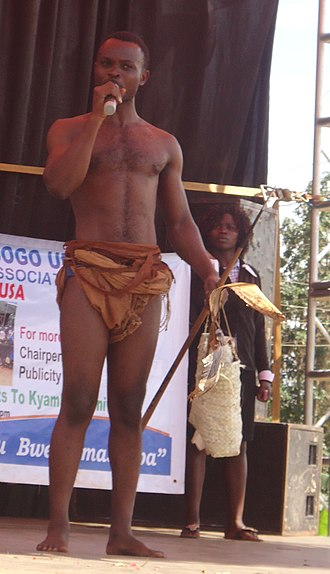
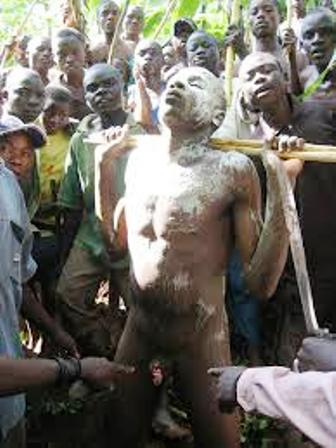

The Masaba people, or Bamasaaba, or Bagisu are a Bantu people inhabiting the eastern Ugandan districts of Sironko, Manafwa, Bududa, Mbale,Namisindwa and Bulambuli. They are closely related to the Bukusu and Luhya of Western Kenya. They are mainly agricultural people, farming coffee, millet, bananas and sorghum on small-holder plots. Maize became popular with the coming of Europeans in the late 1890s.
The name Bamasaaba is sometimes used interchangeably with the name Bagisu, even though the latter is actually a tribe of the Bamasaaba nation.
The current Babukusu of western Kenya are believed to have migrated from the Bamasaaba, particularly from areas around Bubulo, in current Manafwa District. Many clans among the Babukusu have their origins among the Bamasaaba, a testimony to this linkage. Masinde Muliro, once a veteran politician and elder of the Babukusu from Kitale, was from the Bakokho clan, with its base at Sirilwa, near Bumbo in Uganda. Other clans common to both sides include Batiiru Babambo, Baata, Bakitang'a and Batiiru. There are other clans whose names, however, that are only on one side, such as Babichache and Balonja who are mainly among the Babukusu. The common cultural ties are a further indication of close relations among the two sister ethnic groups. During the Constituent Assembly that led to the 1995 Constitution of Uganda, Mulongo Simon, a Delegate from Bubulo East, introduced Babukusu as one of the ethnic groupings of Uganda, acknowledging the fact that both groups, Bamasaaba and Babukusu are intertwined.
Before the arrival of Europeans, Bamasaaba were organised in a decentralized way, but maintained strong clan system that brought them together as a community.
They had a strong fighting force of youths, whose pre-occupation was to herd livestock and to train in warfare. They warded off attackers from neighbouring communities such as the Luo, Iteso, Elgon Masaai (Sabot and Sebei). Earlier, when the Maasai were still dominant in the eastern part of Mt. Elgon, they were the traditional hostile neighbours.
The dual economic activity of both crop and animal husbandry generated a resilient economy that supported their livelihoods and developed into an independent cultural community that endured centuries of hostility.
The advance of the European missionaries in late 1890s, facilitated by Kakungulu, a British Muganda agent, established a base for the British colonial rule in the area. This changed drastically the geo-political settings of the Bamasaaba form there onwards. The Church Missionary Society (CMS) led by Bishop Tucker, assisted by Kakungulu, established British and particularly Anglican systems in the area. They built, through forced labour, road infrastructure and established administrative units.
By independence in 1962, Bamasaaba had had several western educated personalities with some schools, such as Nabumali High School, excelling in national examinations. Mbale town was the cleanest in the country. Professors Timothy Wangusa, Bigala and later Dani Wadada Nabudere were among the leading academics from the Bamasaaba. George Masika, the Chief Justice and Masette Kuuya, a youthful minister during Obote II in the 1980s, James Wambogo Wapakhabulo, the foreign Minister in the Museveni regime, and Hon. Emmanuel Bwayo Wakhweya, former Minister of Finance, Planning and Economic Development, are examples of leading personalities from the Bamasaaba.
The Bamasaaba practice male circumcision in an elaborate ceremony every two years, in the Bumutoto cultural site, which is thought to be the place from where the Bagisu originate. The heart of a goat or a bull is sacrificed, and then the young men are circumcised with knives that are to be used only for these occasions. Then the women perform the kadodi dance, where the women "twist their waist up and down". Afterwards the men are isolated so their wound can heal. If any man avoids the circumcision, they can be called out later (sometimes by their wife), and later forced to undergo the process.
